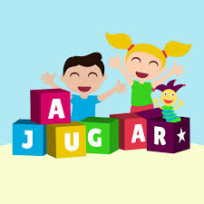

Un juego es una actividad estructurada que generalmente se lleva a cabo por diversión y aprendizaje, tiene reglas, objetivos y un sistema de interacción que permite la participación de uno o más jugadores. Se puede jugar con diferentes propósitos, como divertirse, aprender o competir. Los juegos pueden ser físicos (como el fútbol), de mesa (como el ajedrez) o digitales (como un videojuego en la computadora o el celular).
🎯 Características principales de un juego
- Objetivo: Es lo que el jugador debe lograr para ganar (ejemplo: "llegar al final del nivel").
- Interacción: El jugador puede controlar elementos del juego (ejemplo: "mover un personaje con las teclas").
- Desafío: Hay obstáculos o retos que hacen el juego interesante (ejemplo: "evitar que un enemigo te atrape").
- Retroalimentación: El juego da información sobre el progreso del jugador (ejemplo: "puntos o mensajes de victoria").
🎯 Beneficios al jugar de manera moderada
- Desarrollo del pensamiento lógico: Mejora la resolución de problemas y la toma de decisiones.
- Creatividad y expresión: Permite explorar mundos y soluciones innovadoras dentro del juego.
- Aprendizaje de tecnología: Enseña programación, diseño y herramientas digitales.
- Habilidades estratégicas: Ayuda a planificar y tomar decisiones tácticas en tiempo real.
- Superación de retos: Fomenta la paciencia y persistencia para lograr objetivos.
🎯 Beneficios al diseñar y programarlo
- Desarrollo del pensamiento lógico: Permite programar estructuras lógicas y algoritmos.
- Creatividad y expresión: Desarrolla personajes, escenarios e historias únicas.
- Aprendizaje de tecnología: Introduce al uso de interfaces digitales y mecánicas de juego..
- Habilidades estratégicas: Requiere estructurar el juego, sus reglas y mecánicas.
- Superación de retos: Obliga a resolver problemas de código y mejorar el diseño.
🎯 Tipos de juego
- Juegos de aventura: El personaje se mueve saltando entre plataformas y evitando obstáculos.
- Juegos de simulación: Recrean situaciones de la vida real o escenarios imaginarios.
- Juegos de laberinto: El jugador debe encontrar la salida sin tocar las paredes.
- Juegos de preguntas (Quiz): Se presentan preguntas y el jugador debe responder correctamente.
- Juegos de peleas: Dos personajes luchan usando golpes o habilidades especiales.
- Juegos de memoria: El jugador debe recordar secuencias o imágenes.
- Juegos de tiempo y reflejos: El jugador debe presionar teclas o hacer clic en el momento justo.
- Juegos educativos: Juegos diseñados para enseñar temas de matemáticas, ciencias, historia, etc.
- Juegos de plataformas: El personaje se mueve saltando entre plataformas y evitando obstáculos.
- Juegos de disparos: El jugador controla un personaje o nave que dispara a objetivos.
- Juegos de carreras: Se compiten autos u objetos en un circuito o línea de meta.
🎯 Tipos de juego
- Objetivo del juego: Define qué debe lograr el jugador para ganar o completar el juego. Puede ser alcanzar una meta, superar niveles o vencer enemigos.
- Mecánicas de juego: Son las reglas y acciones que el jugador puede realizar, como saltar, correr, disparar o recolectar objetos.
- Escenario o entorno: Es el mundo donde ocurre el juego. Puede ser un bosque, una ciudad, un castillo o incluso el espacio.
- Personajes o sprites: Son los protagonistas, enemigos y objetos interactivos dentro del juego. Pueden ser jugadores, NPCs o elementos animados.
- Sonidos y música: Incluye efectos de sonido, música de fondo y diálogos que mejoran la experiencia del jugador.
- Historia o narrativa: Algunos juegos tienen una historia que guía al jugador y da contexto a los eventos dentro del juego.
- Interfaz de usuario (UI): Son los elementos visuales que muestran información, como barras de vida, mapas, puntuaciones y botones.
- Niveles o fases: Divisiones del juego con diferentes retos o escenarios, que aumentan la dificultad progresivamente.
- Motor del juego: La parte técnica que controla cómo se mueve y reacciona todo dentro del juego. En Scratch, sería el código de los bloques.
- Puntuación y recompensas: Elementos que miden el progreso del jugador, como puntos, monedas, estrellas o logros.
- Final del juego: Puede ser ganar al cumplir el objetivo, perder todas las vidas o desbloquear un final alternativo según las decisiones del jugador.